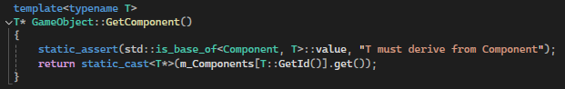

MULTI-THREADED GAME ENGINE - ASTEROIDS
A project to build out various game engine features, applied to Asteroids. See Github.
Uses C++, 32-bit SFML for graphics.
Typical asteroid rules with two main additions: the glow, pulse and shadows detailed in the Rendering section and a period of increased asteroid spawn rate, increase fire rate and blue->red glow every 30 seconds.
Arrow keys to move and turn, Space to fire, Q to toggle rechargeable boost to the glow.
Preface & Overview
Performance was profiled and improved extensively through the consideration of: Instruction-level parallelism, Spatial and temporal cache locality, Cache line size and memory alignment, Context switching, Data dependency chains, Branch prediction and early exit strategies, Memory access patterns, Memory allocation and deallocation costs, Number of draw calls, Shader efficiency.
Techniques included: SIMD, Loop unrolling, Data prefetching, Custom memory allocators, Object pooling, Atomics and lock-free data structures, Spatial partitioning, Efficient tagging system for collision detection, Double buffering, Job system for parallel processing, Phase-based frame execution, Optimised collision detection algorithms, Component-based game object system.
In my optimisation process, I applied a systematic approach based on Amdahl's Law to prioritise improvements. For example, profiling revealed that the GJK intersection testing, and specifically its old Support function, consumed a lot of frame time so it seemed reasonable to look for a better search algorithm than O(n) complexity. It now uses a binary search (with polygon vertices ordered anti-clockwise), reducing complexity to O(log n), and yielded substantial performance gains in collision. Whilst a major focus of the project was on optimisation, I made an effort not to jump to prematurely optimising everything. In general I followed the structure of implementing something simple, then profiling and working from there.
Note: This project prioritised learning and building scalable systems over task-specific solutions. While some elements were purpose-built, the primary goal was on developing scalable, well-structured solutions and gaining as much experience as possible throughout the process. The project was inspired by reading Game Engine Architecture and Computer Systems: A Programmer's Perspective and practises a variety of concepts learnt from those books. As a next step, it would be interesting to develop a streamlined and heavily optimised version of this at a fixed scope, with a pure focus on data-oriented design.
Sections:
- Gameplay
- Job System
- Game Loop
- Rendering & Shaders
- Lock-Free Object Pool
- Component System
- Collision with GJK
- Optimisation Techniques
- Future Optimisation
- Conclusion
- Video
Major Features:
Gameplay
The gameplay is surprisingly interesting for such a simple concept. The main additions are:
- Entire screen is dark outside of a glow around the ship and a regular pulse emitted from it.
- There is a rechargeable boost to the glow which lasts about 5 seconds (which needs a UI element to track, I don't have this yet).
- 'Overdrive' period of increased fire rate and asteroid spawn rate, with a red glow instead of a blue glow.
Having the player wrap around the screen is a novel experience here since you have to try and time it with the pulse reaching (unoccluded) the position where you would emerge on the other side. Meanwhile there's a lot of value in trying to create a mental picture of the entire screen as the pulse reveals everything. The high asteroid density mixed with higher fire rate is maybe a bit deceptive as well - it's harder with more asteroids, but easier with increased fire rate, but also made harder as you spawn more medium and small asteroids. As an accidental result of how the glow occlusion is created, the asteroids receive either a blue or red tint depending on the glow's colour and this helps a lot with building an atmosphere.
Job System
Jobs are packaged as Declarations, containing all the info required to complete the job. The function wrapper allows member functions to be used as jobs.
Each of these member functions returns void and takes a uintptr_t as its argument, to pass on a pointer to relevant data. That function can reinterpret cast this to what it needs.
On completing a job, the thread atomically decrements its counter to synchronise phases in each frame.
The two major job queues used in the job system are the main queue and the buffer queue. Threads use a mutex to take jobs from the main queue.
Each frame is separated into phases, which are determined by concurrency and ordering requirements.
During each phase, the buffer queue is filled with the jobs of the next phase and when the final thread completes its work, the buffer queue is swapped with the empty main queue.
Threads are then signalled using control variables.
The Main thread is used for all rendering tasks, and currently does not work from a queue. SFML's lack of thread-safety means it's better to have the main thread do all graphics-related work.
Game Loop
The following shows the code for the Main thread's game loop, as well as what jobs are carried out by the other threads in parallel:
Previously the idea was for the main thread to complete all rendering whilst both Update and Collisions were resolved by other threads.
Then the later snapshot is prepared for the main thread to draw from in the next frame.
After adding a particle system and shaders to add complexity to the rendering step, updating all game objects and particles is always faster than drawing the game objects.
It then makes sense to not double buffer the particles since they neither have sprites to store the old position, nor do they interact with anything else currently (this could be changed if needed).
Rendering
The ship constantly emits a blue glow and periodically emits a radial pulse. Both of these are occluded by asteroids which cast shadows behind them.
The challenge of the game is the lack of visibility and the looming asteroids you catch in the distance with each pulse.
 Both are line traced in shaders - given the small radius of the glow, the cost is not too high for it.
The pulse stays centred on the position at which it was emitted.
Both are line traced in shaders - given the small radius of the glow, the cost is not too high for it.
The pulse stays centred on the position at which it was emitted.
However, line tracing the pulse all the way out to the edge of the screen is not a good idea and I have not yet optimised this procedure.
It is only in place because it looks cool. With a fixed width band, and a linearly growing radius, the number of pixels in the band only grows linearly at 2*pi*width.
You can immediately discard pixels which are off screen or not within the band based on their radius.
Other methods to achieve this effect could be to store a texture with this pulse and advance it each frame, occluding 'rays' as necessary, redoing the line trace each frame is wasteful.
You could also just not occlude it, and have the pulse pass through everything.
The following shows the render process (excluding particles which are tacked on the end):
 The two images below help illustrate the process slightly better.
The coloured asteroids image shows what m_BufferRenderTexture1 looks like after DrawAsteroidVertexArray.
Using 255 green and a varied red value for each asteroid, the shader can determine once it has entered a new asteroid during the line trace.
The two images below help illustrate the process slightly better.
The coloured asteroids image shows what m_BufferRenderTexture1 looks like after DrawAsteroidVertexArray.
Using 255 green and a varied red value for each asteroid, the shader can determine once it has entered a new asteroid during the line trace.
As mentioned in the comments of the Draw function, light should not be allowed to 'chain' through overlapping asteroids.
Asteroids closest to the player are rendered on top to avoid odd looking shadows, and I settled on two as the number of asteroids light can pass through.
This best solves the case where adjacent asteroids are roughly the same distance from the player and overlap.
Note that this is not analogous to a simple ray trace since it's 2D, there is nothing like following the trace of light from source -> object -> camera.
The glow image shows what m_BufferRenderTexture2 looks like before the blur is applied.
Note two things here: the 'inside' of each lit asteroid is filled with the glow as detailed in the Draw function and the shadows are also not quite perfect.
If you look closely at the asteroid nearest the centre, you can see a streak of shadow passing through it.
This is due to the line trace idea not really working with concave shapes.
If a trace sees a colour and then sees black, it only continues for so long before it must assume it will not re-enter the asteroid.
Blurring helps assuage this, as does increasing the distance you continue tracing after exiting but there is a balance to be struck.
Currently only the asteroids share a texture atlas, in future, the ship and projectiles would be on the same atlas and only one texture would be needed for rendering. The option to batch all sprites into a single draw call is then available. Since occluders and non-occluders are currently drawn separately, asteroids are the only thing on the atlas.
Lock-Free Object Pool
Pooling projectiles and asteroids seemed sensible - you can easily create a pool for any game object with this.
By using shared_ptr (solves ABA) atomically to remove and insert objects at the head of a linked list (atomic_compare_exchange_weak), you can avoid the need for mutexes and context switching with a lock-free, thread-safe pool.
Allows dynamic resizing at runtime depending on config settings which can also be changed in anticipation of higher/lower demand.
Originally it was templated so that it could store: 'T prefab' and then 'make_shared<T>(prefab)' to make copies and 'static_assert' that it derived from GameObject.
Instead it now uses a clone function for each GameObject and simply stores a shared_ptr to a GameObject - no need for templating.
There is a pool manager which keeps a map of all pools, keyed by strings. It is only keyed by strings for readability's sake, ints or enum class would be more optimal.
Component System
Similar to Unity, currently includes collision components (box, circle and polygon) and a pooled object component for objects that belong to a pool.
I didn't like using type identification to store the components in a map, so I wanted the keys to be ints.
Each int would be unique to the derived class i.e. CollisionComponent or PooledObjectComponent, but each of the Box, Circle and Polygon classes (which derive from CollisionComponent) would share the unique CollisionComponent int (since each object will only have one collision component and you will be calling GetComponent<CollisionComponent>()).
I needed classes derived from Component to have the unique ids, but classes derived from these would use their parent's.
This is used to assign the unique ids to each class and Component has: static ComponentIdCounter IdCounter.
The desired functionality is similar to a templated virtual getId function (which isn't possible). Then calling T::getId in the get/add component templated functions would call IdCounter.getId<T>();.
My current solution, which I don't like, involves each class derived from Component having a function like this:

This way any class derived from CollisionComponent or CollisionComponent itself will use this function when T::GetId() is called.
In theory GetId could be an overridden non-static function for the AddComponent case, using the component passed as the argument.
However, the GetComponent function has no argument and only has the type T to use (no associated object).
So it seemed like making this function static and hence not virtual was the only choice from this point, but then how do you make assurances that each derived class implements this function?
I don't know the answer, I can't think of a solution that isn't messy nor a place to put a static assertion that isn't redundant.
I know you can do it if the base class is templated and derived classes inherit from Base<Derived>, but I haven't thought through any potential ramifications of this.
Update: It seems you can use SFINAE (Substitution Failure Is Not An Error) to create a compile-time check for a class implementing a certain function, this would likely work well.
Collision
Uses GJK for all intersection testing (excluding circle-circle) and double dispatch to select the relevant function. The support function for GJK uses a binary search, permitted by ordered vertices of convex shapes. Works for every combination of Circle, Box and Convex Polygon colliders.
There are the obvious options of partitioning the screen into a quadtree, or using a spatial hash grid, but originally I wanted to try an approach where I managed the memory and which allowed lock-free concurrent access.
This manifested as a collision grid, where each cell would contain a linked list of objects.
The problem was that nodes needed to be inserted at the head, but removed from anywhere in the list.
A successful 'lock-free' implementation would need to be better than just blocking off the whole list to remove something that is mid-list.
I made some interesting headway with this, and since I was managing the memory for all the cells and nodes, there was an interaction with the ABA problem where it actually worked to the benefit of the method.
Very simply, the idea was to have a 'runner' and a 'previous', the runner would iterate through the list until it reached the node you wanted, then the previous would catch up.
Removal would involve 'claiming' the link ahead of you and behind you (i.e. pointing it to null), and then doing a simple atomic compare exchange.
The tricky parts are where the runner and previous can potentially get stuck in the list.
With concurrent access, a runner can be on a node which gets removed, deallocated, and then reallocated to be added at the front of the list, and it can just continue iterating, a neat ABA interaction.
By ordering the claiming of links, you end up with parts of the list which are blocked, but not all - runners ahead of you can still continue, anything prior to you is free to be removed.
The reason I moved on from this was due to how mid-lists would interact when they became the new head.
There were a ton of edge cases here which were difficult to debug given the state they left the list in - e.g. two lists, with one completely isolated/lost.
I moved on at a stage where I thought it should work but it didn't, regardless it seems unlikely that the performance of this method would be that good given the overhead of double iteration and the full process for cases where there's no competition, but it was interesting nonetheless.
Currently a fixed collision grid is in place - offering concurrent, fast access, good spatial locality at the cost of some wasted checks and a larger memory footprint.
The grid allocates a large block of memory which it divides into cells which contain nodes for each object - there are very obvious drawbacks to this but I wanted see how much I could get out of it.
Objects are placed in the grid based on their broad-phase boxes.
The nodes also contain the collision tags of that object and the tags it is looking for, the result is a check for (currentNode->selfTags & nextNode->otherTags > 0).
This tag comparison and grid design in general in focused on good cache locality - no need to go inside each game object until the intersection test as the tags are stored in each node.
The allocator tracks in-use nodes with a bit array, currently these are stored in a separate array but I intend to move them to the start of that cell's memory.
So the memory will look like:
BitArray | Node | Node | Node...
BitArray | Node | Node | Node... etc.
Working in 32-bit, the node struct contains a GameObject*, and two uint16_t for both tags - 8 bytes total.
During collision resolution, each thread executes a job which acts on a contiguous chunk of the grid memory and tests the pairs within each cell.
The fixed size grid works due to the constrained nature of the game and typically asteroids are well-distributed throughout the screen.
I need to implement an overflow solution for when there are too many objects per cell, this would look something like an extra chunk of memory at the end of the grid.
The allocator can assign this to a given cell and then reclaim it later. If this is frequent then the design starts to fall apart.
The collision grid also uses the last bit in the tag of each node to specify whether each object occupies more than one cell in the grid. If so, its successful collision must be recorded in a thread-safe set to avoid double counting.
Optimisation Techniques - SIMD, Loop Unrolling, Prefetching
The project includes sectioned off work signalled by '#if USE_CPU_FOR_OCCLUDERS'.
Please note that the method and idea are extremely naive, they only remain in the project because the code is relevant to my learning of different optimisation techniques.
The idea was to use the collision grid as a basis for a high res occupancy texture as used in the Rendering section by the glow shader.
The outer cells occupied by each collider's broad-phase box would then be evaluated pixel by pixel for being inside or outside the polygon.
Therefore multiple threads will work to update this texture/pixel array on the CPU.
The flaws in this method are very apparent and it is not even close to viable, but with the optimisations in place, it runs surprisingly well.
The snippet above went through many iterations of profiling.
It shows the point in polygon function, vertices and y coords are duplicated to allow use of _mm256_loadu_ps instead of _mm256_set1_ps.
During this process I considered things like cache locality, dependency chains, instruction pipelining along with the careful use of loop unrolling and prefetching.
By taking the cross product of vert A -> x with vert A -> vert B, verts are required to go clockwise so a positive cross product means it's outside.
It iterates through each edge and stops once all pixels in the register are deemed outside (or all edges have been checked).
The early exit allows you to begin testing the next set of points against the edge which just proved adjacent points to be outside.
Loop unrolling to process two rows at a time in sets of 8 allows it to take advantage of the overlap in x coords between the sets.
Similarly the main bottleneck in profiling was the: mask1 = _mm256_and_ps(mask1, _mm256_cmp_ps(cross1, zeros, _CMP_GE_OS)); step.
mask1 can only be determined after cross1 is calculated, and everything following requires mask1 so there is a clear dependency bottleneck.
All instructions for mask2 can ideally go tightly behind those for mask1.
It was important to be mindful of the number of __mm256 registers needed at a given time such that none would need to be offloaded to memory.
Prefetching was suitable here to load the next two rows whilst iterating across the current two.
SIMD was also used for rotating boxes (or any set of four points) for creating the broad-phase boxes or rotating polygons.
Future Optimisation
The current main bottlenecks are: line tracing the pulse when it reaches the corners of large screens unoccluded and using iterators for spreading the work between threads.
I discussed the pulse earlier, but the iterators are a remnant of the previous container used for storing GameObjects.
std::multiset<std::shared_ptr<GameObject>, TextureAndIDComparator> GameObjectMultiset;
The multiset is no longer needed, and once every texture is on the same texture atlas as discussed in the Rendering section, ordering objects by texture is no longer necessary.
The multiset requires iterators for the threads to process but using these with high frequency concurrently accounts for a large amount of frame time.
This is likely due to poor cache efficiency with a data structure like a set, such that iteration requires jumping around a lot in memory.
A quick fix would be to just have a vector of occluders and non-occluders, and then adjust all the jobs accordingly.
There is also a lot more room for load balancing of threads and potential work stealing.
Having threads continue to work on the same objects/memory each frame as opposed to just taking the next job in the queue could be beneficial.
There are also several instances of checking each frame for a significant difference from previous values before updating e.g. for shader uniforms or position in collision grid.
There are likely more cases where this might be suitable, as well as considering options for the tick rate of things like collision.
Updating the particle system is not optimised yet, the only thing currently implemented is splitting the work up into multiple jobs.
It would likely benefit a lot from SIMD.
Conclusion
Created an engaging game with a novel twist on Asteroids, successfully implementing advanced game engine features and multi-threading concepts. Practised and applied recently learned theory regarding game engine architecture, concurrent programming, memory caches and low-level optimisation techniques. Throughout the project, maintained a focus on understanding how low-level hardware impacts performance, exploring CPU architecture from basic logic gates (using resources like nandgame.com) to the foundations of machine code and Assembly. Gained valuable experience in graphics programming and shader development with SFML, while significantly improving my skills in performance profiling and optimisation.